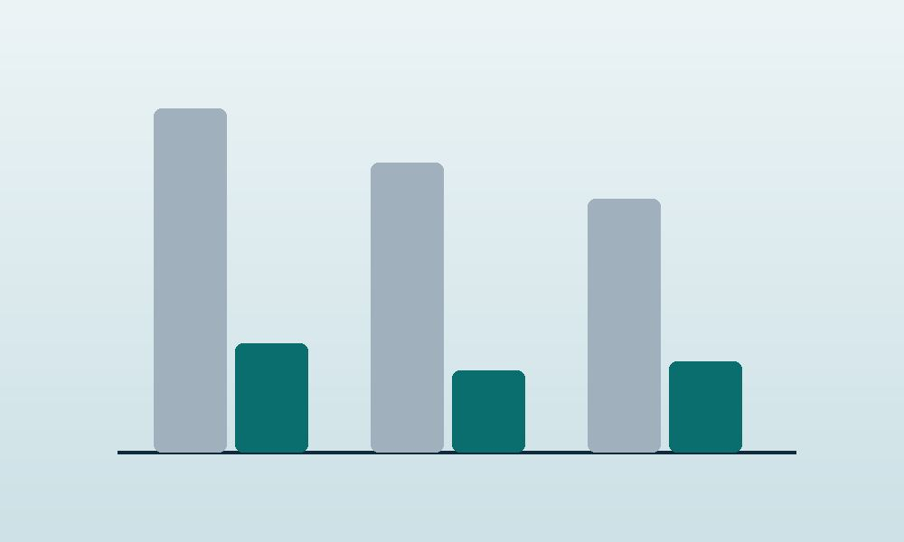

Semantic HTML
Elements such as header, nav, main and footer describe the page structure to browsers and screen readers.
Speed and accessibility are not extras. They decide whether a visitor can use your site at all. This project shows the practical steps.
A performance-focused page loads quickly, even on slow phones and weak networks. An accessible page can be used by people who rely on screen readers, keyboards, captions, or high contrast.
The two goals support each other. Clean, semantic HTML is smaller, easier for assistive technology to read, and faster for browsers to parse. This site is a small demonstration of both.
Elements such as header, nav, main and footer describe the page structure to browsers and screen readers.
Compressed WebP with JPG fallback, responsive sizes, explicit dimensions, and lazy loading below the fold.
One stylesheet, one small script, both minified for production, with no libraries or frameworks.
A system font stack means no font files to download, so text appears immediately.
Every link, button and form field can be reached with Tab, and each shows a clear focus outline.
Animations are minimal and switch off for visitors who ask their device to reduce motion.
Fewer requests and smaller files mean a faster first paint. Scripts use defer so they never block rendering.
Images are resized to the sizes actually displayed, compressed, and served as WebP where the browser supports it. Images below the fold use loading="lazy".
CSS variables remove repeated values, shared classes remove duplicated rules, and simple class selectors keep matching fast.

Landmarks, a clear heading order, image descriptions and labelled controls let screen readers announce the page accurately.
Press Tab to move forward and Shift + Tab to go back. Use Enter to follow links and Esc to close the mobile menu.
Text and background colors are chosen to meet the WCAG AA ratio of 4.5:1 for normal text. Verify with a contrast checker before you rely on any value.
Fields marked with an asterisk are required.